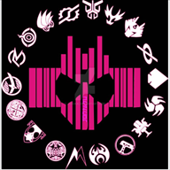

KamenRider Decade

a
Havan
1.0.0
+
Quản lý Proxy
Thay IP Phiên Bản
Thiết lập
Hồ sơ
Trợ giúp
Lưu log
Thoát
a
++
+
1
Thoát
Ẩn ứng dụng
Treo tắt màn
⏰ Hẹn giờ tự tắt
Tiết kiệm pin
Lưu log
Tự động dọn bộ nhớ
Thêm proxy
Gán proxy cho tab
Giới hạn FPS
▶
Khoá xoay màn hình
Bàn phím ảo
▶
Thay IP Phiên Bản
Thay IP Phiên Bản (NSO)
Chọn máy chủ:
Tự nhập IP/Port...
Server 1 (Bokken)
Server 2 (Shuriken)
Server 3 (Tessen)
Server 4 (Kunai)
Server 5 (Katana)
HỦY
LƯU
Gán Proxy Cho Tab Hiện Tại
Không dùng proxy (Direct)
SOCKS5 Proxy
HTTP CONNECT Proxy
HỦY
LƯU
Mở Nhiều Tab
Nhập số lượng tab muốn tạo:
HỦY
TẠO